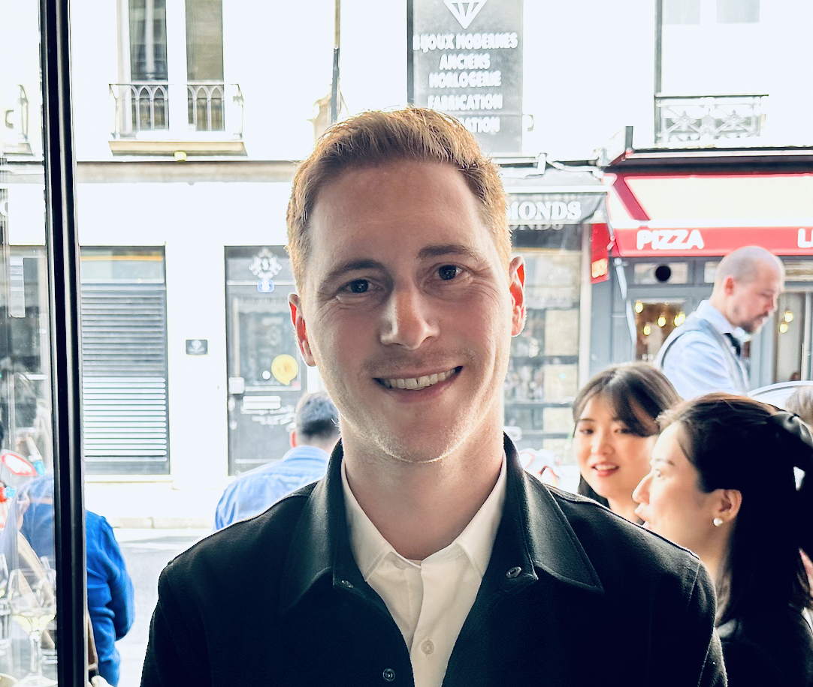

Professional Career Summary
Certified Project Manager (PMP from PMI) and Salesforce Admin boasting 3+ years of experience serving small to mid-sized companies, complemented by a decade in education.
Proficient in managing and deploying client-facing products, I've consistently overseen all project lifecycle stages, ensuring timely and budget-friendly delivery. I'm eager to embrace a role with increased growth and responsibility, leveraging my expertise for impactful client-facing projects.
Work Experience
Lead Engineer of Enrollment, Remote at Galvanize Inc
September 2021 - August 2023
- Led and mentored a team of four, supervising the execution of over 500 live testing sessions and the grading of more than 4,000 students. Designed and developed customer-centric app functionalities leveraging technologies including JavaScript, MongoDB, GitHub, CSS, and HTML.
- Directed project and sprint kickoffs, reviews, and retrospectives for an 8-member cross-functional team, ensuring 100% on-time delivery of curriculum project milestones every 6 months.
- Implemented agile methodology within a cross-functional team, accelerating release cycles from 8 months down to 4 weeks, providing valuable content utilized by other distinct teams.
- Enhanced customer onboarding and testing processes for a new education product by resolving bottlenecks with back-end automation and integration, saving $100k+ in anticipated operations costs.
Technical Instructor, Remote at Galvanize Inc
January 2020 - September 2021
- Successfully coached over 100 students, guiding them into their preferred coding programs and launching a coaching program to combat high student attrition rate, tripling retention in the targeted segment and generating an additional $2M in revenue.
- Designed and executed training for an underperforming 5-member team, driving them to achieve 100% of customer retention goals. This resulted in a 40% surge in the net promoter score, sustained over the next two years.
- Led the standardization of disparate curricula for 1,000+ students, resulting in a 10% boost in overall customer success.
Language Instructor, USA, Japan, and Korea
August 2010 - October 2019
- Led online classes, mentored three part-time instructors, and trained full-time staff in teaching and tutoring techniques. Successfully coached over 100 students, guiding them into their preferred coding programs and launching a coaching program to combat high student attrition rate, tripling retention in the targeted segment and generating an additional $2M in revenue.
- Designed and executed training for an underperforming 5-member team, driving them to achieve 100% of customer retention goals. This resulted in a 40% surge in the net promoter score, sustained over the next two years.
- Led the standardization of disparate curricula for 1,000+ students, resulting in a 10% boost in overall customer success.
Education
-
University of California, Davis B.A. (History and East Asian Studies)
September 2006 - May 2010
- Hack Reactor Immersive (Javascript/Full Stack Web Development)
September 2018 - December 2018
- Project Management Professional (PMP from PMI)
June 2023 - July 2023
- Salesforce Certified Administrator
August 2023 - October 2023